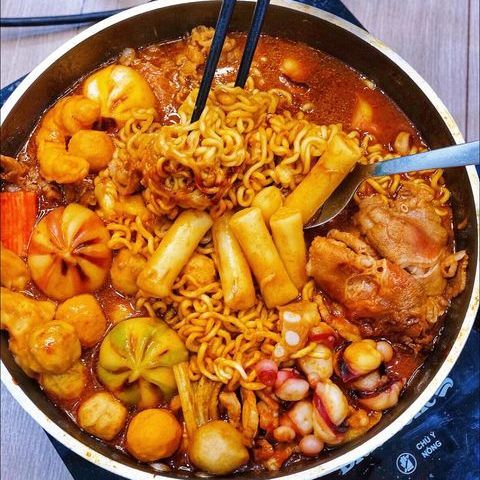

Produk Unggulan Kami

Seblak Original
Seblak yang berisikan kerupuk seblak, telur, sosis, dan mie dengan paduan kuah pedas yang menggugah selera

Seblak Ceker
Seblak ceker merupakan menu seblak yang ditambahkan toping ceker ayam yang lunak dan mudah untuk dimakan

Seblak Komplit
Seblak Komplit merupakan menu seblak dengan tambahan toping seperti ceker, bakso, dan beberapa toping lain